相加，你必须找到这三个分母的公倍数。
相加，你必须找到这三个分母的公倍数。下面是分数的加、减、乘、除的运算法则。
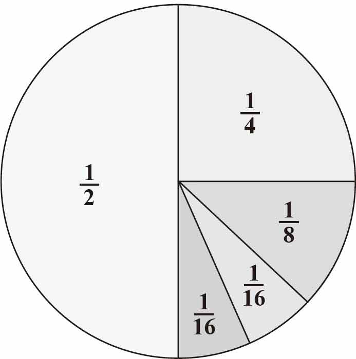
■分数上方的数字叫分子，下方的数字叫分母。
■当两个分数有一个共同的分母时，你可以简单地把两个分数的分子相加就能得到分数之和。
■当两个分数没有共同的分母时，你必须找到一个共同的分母。注意：这里指的仅仅是分数加减法的运算。
在图1-7所示的例子中，分数
相加，你必须找到这三个分母的公倍数。
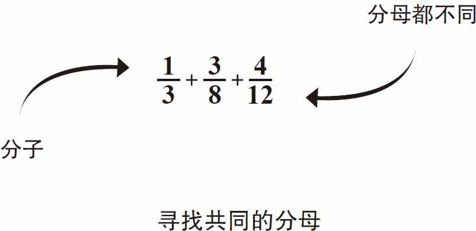
图1-7
列出分母的倍数，直到找到一个公共的分母，然后分子乘上相同的倍数。
如图1-8、图1-9和图1-10所示，3、8和12的最小公倍数是24。每个分母的数分别乘以对应的倍数，使每个分数的分母为24，每个分子乘以其分母相同的倍数。例如，对于分数 ，24除以3等于8。8乘以1得到分子数8，所以
变成了
，24除以3等于8。8乘以1得到分子数8，所以
变成了
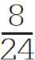
。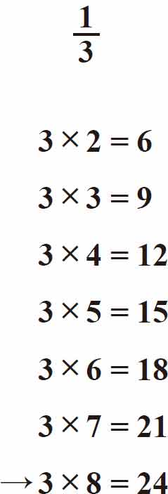
图1-8
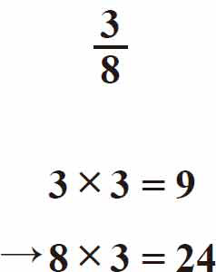
图1-9
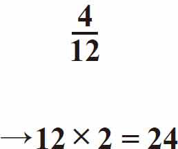
图1-10
同样地，对于分数
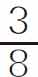
，24除以8等于3。3乘以3得到分子数9，所以 变成了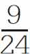
。最后，对于分数
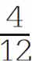
，24除以12等于2。4乘以2得到分子数8，所以 变成了 。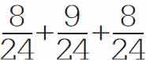
等于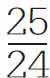
，简化为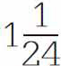
，如图1-11所示。
图1-11
■两个分数相减，分母相同，只要分子相减，如图1-12所示。
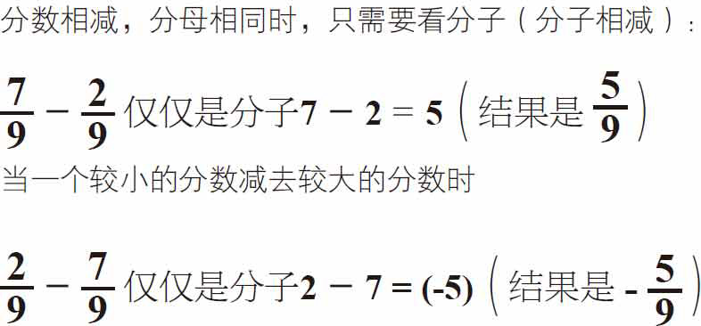
图1-12
■分数相乘实际上更容易。你不需要找到一个共同的分母。只要把分子与分母分别相乘，如图1-13所示。
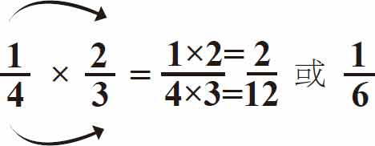
图1-13
■当分数和整数相乘时，先把整数转换成分数形式，然后再相乘。例如： 。另一个例子见图1-14。
。另一个例子见图1-14。
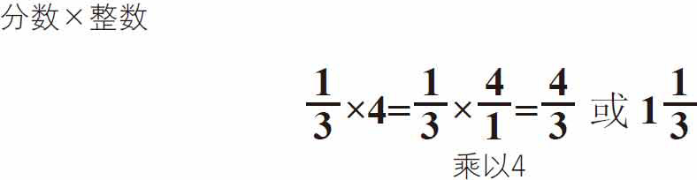
图1-14
■分数与带分数的数相乘，将带分数的数转换成假分数（分子大于分母）后再乘以分数，见图1-15。
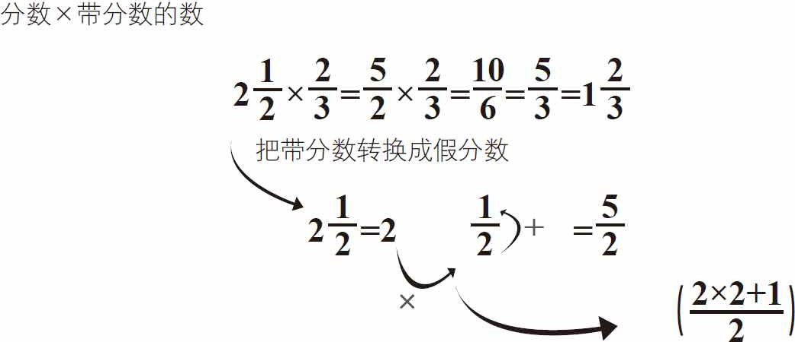
图1-15
■分数相除和分数相乘一样简单。你所要做的就是把第二个分数的分母和分子翻转后再与前面的分数相乘，见图1-16和图1-17。
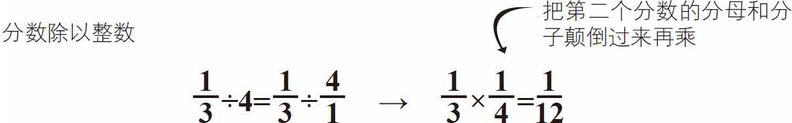
图1-16
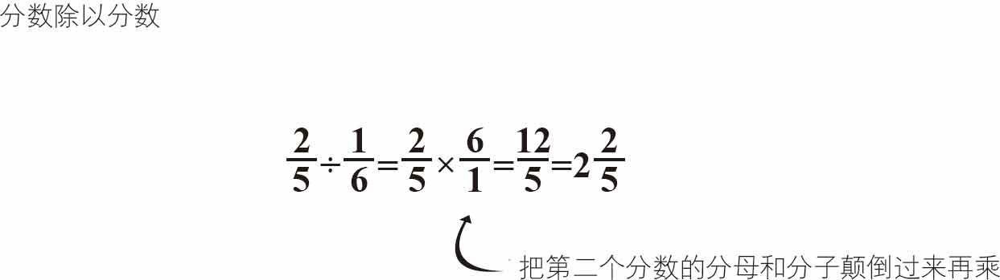
图1-17
■两个带分数相除，先将它们转换为假分数，再把第二个分数的分母和分子倒转过来与第一个带分数相乘，如图1-18所示。
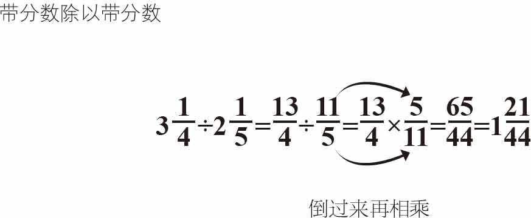
图1-18
接下来讲解的是小数，百分数和分数的运算法则。
■在图1-19中，分数
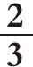
的分母是3，3不能被10或100整除，但数字9可以给你一个大概的结果。你可以像这样乘以333：3×333＝999，2×333＝666，就等于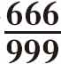
（或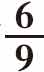
，确切地说等于小数0.66666666666667）。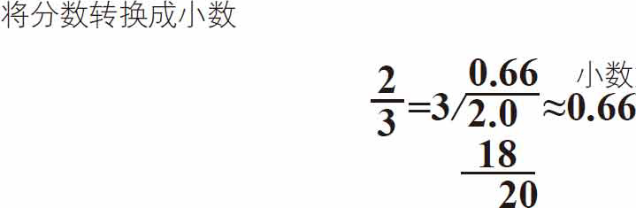
图1-19
■把分数转换成百分数（100的一部分），例如：
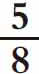
。5除以8等于0.625。转换成百分数，得到62.5％，如图1-20所示。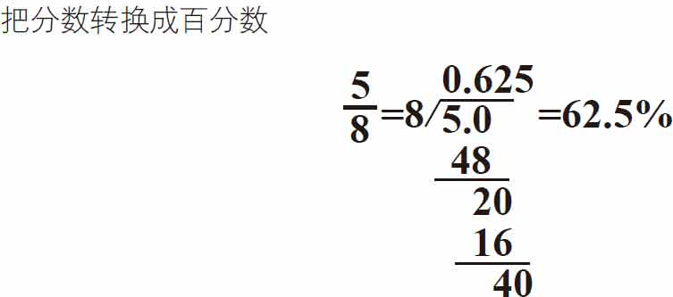
图1-20
■把小数转换成分数，例如：0.30。先把它写成分数
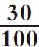
，简化为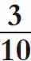
，见图1-21。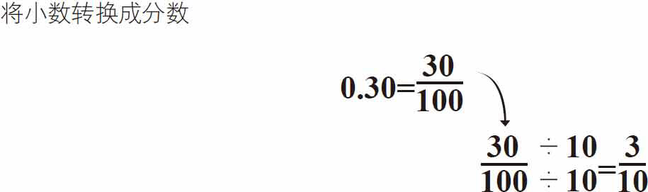
图1-21
奇妙的分数测验练习可以提高你的分数计算能力。
需要准备的东西：
►纸板
►回形针或黄铜纸扣
►CD或DVD或罗盘
►剪刀
►纸
►铅笔
►透明胶带
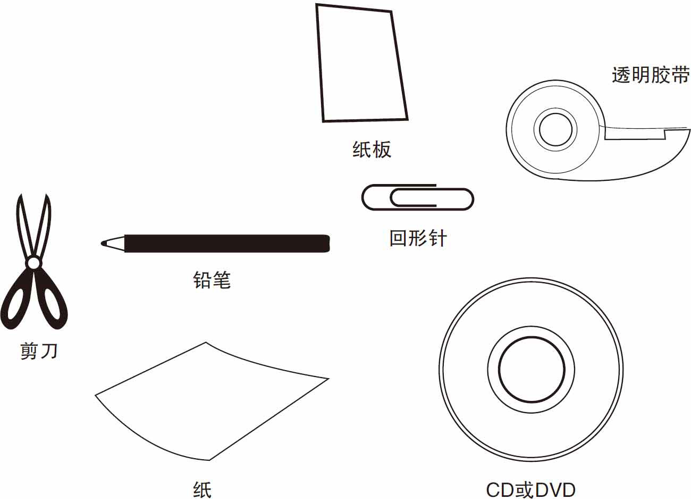
你可以使用下一页的插图作为实验参考，并按步骤操作。
首先，用纸板制作一张CD或DVD大小的圆盘，或者用罗盘来创建直径为3厘米的圆盘，如图1-22所示。
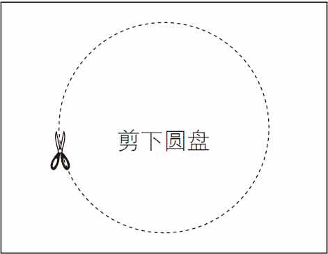
图1-22
接下来，剪出如图1-23所示的矩形纸盖子，包括“窗口”孔。你也可以先用铅笔画出虚线，然后准确地沿着虚线剪开窗口的部分。
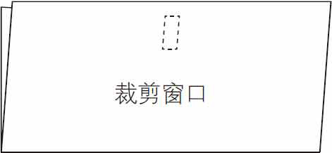
图1-23
把纸盖子对折，在窗口下方打一个孔，如图1-24所示。在圆盘的中心也打一个孔，如图1-25所示。
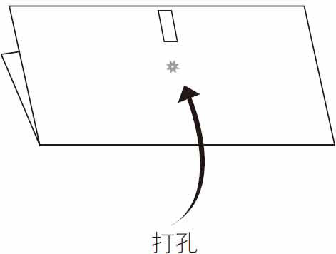
图1-24
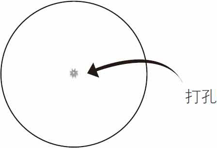
图1-25
如图1-26所示，首先将圆盘放在对折的纸盖子里，这样你就可以在需要的时候拨盘来看到答案。然后小心地将黄铜纸扣或回形针从盖子外侧穿过圆盘将其固定住。
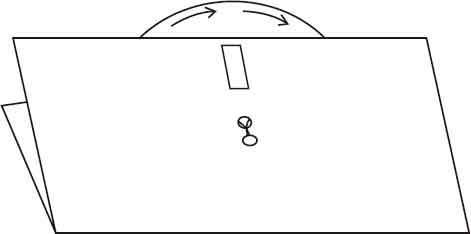
图1-26
拨盘选择方程然后通过窗口查看答案，见图1-27。
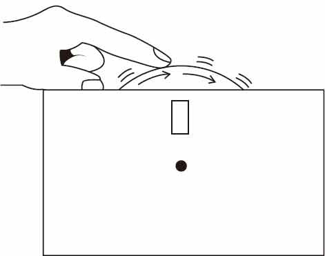
图1-27
转动刻度盘测试你的分数计算技能！
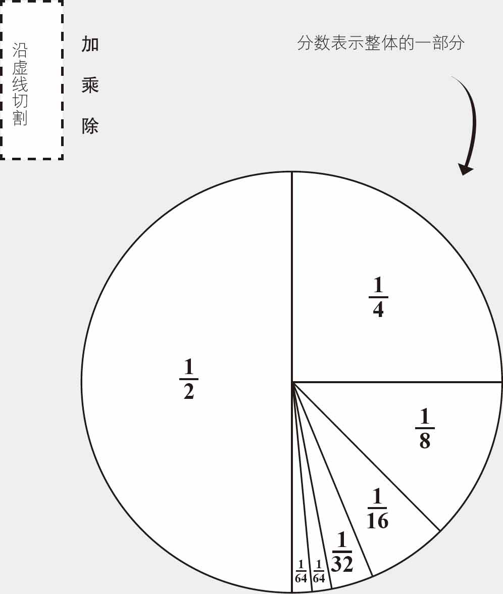
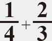
找到共同的分母只需分子相加，你也可以用这种方法做减法！

 这是很容易的！只是把分子和分母分别相乘。
这是很容易的！只是把分子和分母分别相乘。
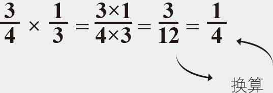
 只需把第二个分数的分母和分子倒过来再与第一个分数相乘即可。
只需把第二个分数的分母和分子倒过来再与第一个分数相乘即可。
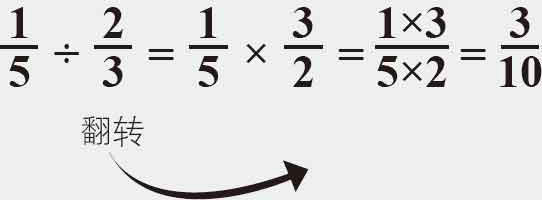
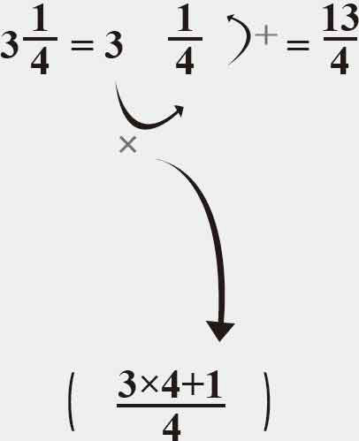
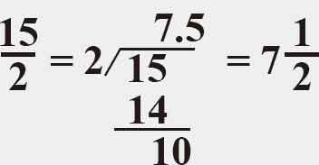
下图是实验的一个举例说明。
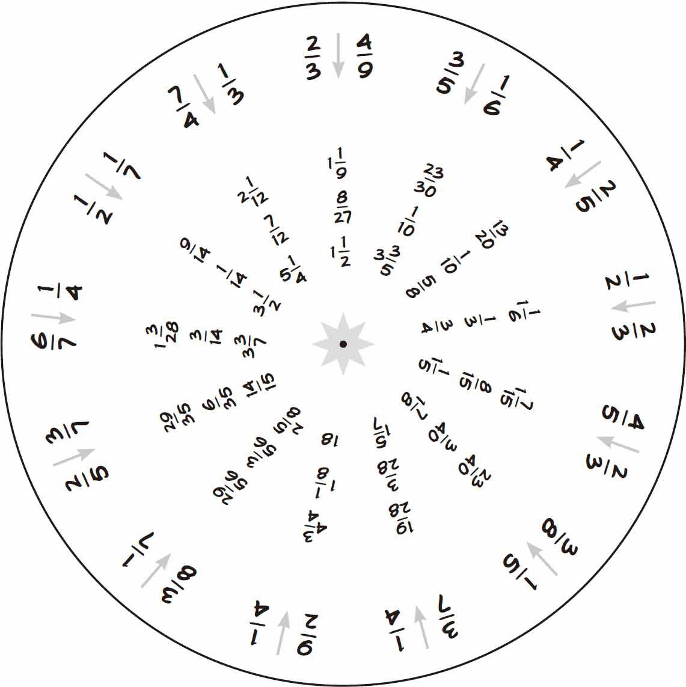
如果你手边没有黄铜纸扣，我可以教你如何用剪刀快速地剪出数学卡的窗口，并用回形针将光盘连接起来。
你可以用剪刀剪出数学卡片的窗口部分。从最靠近边沿部分的一侧开始剪裁，如图1-28所示。

图1-28
然后在卡片的内侧粘上一层透明的胶带，以保证数学卡的牢固，见图1-29。
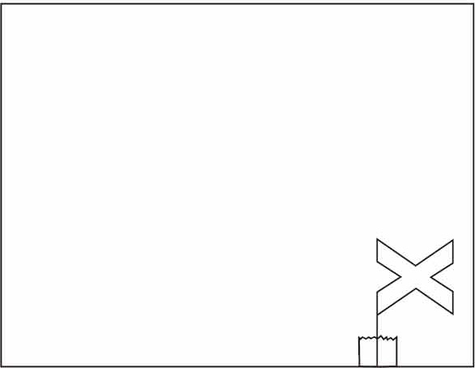
图1-29
图1-30展示了一个回形针，当它在一端的小圆环弯曲时，可以代替纸扣，见图1-31。
图1-30
如果你不想用黄铜纸扣件，你可以弯曲一个回形针并用它来固定数学卡里面的圆盘
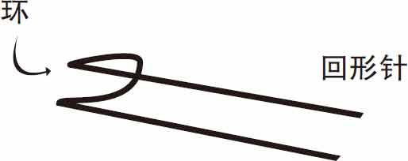
图1-31
将一个回形针弯曲成一个1厘米的线圈，一端弯曲
只需将回形针的两端通过数学卡前端的孔以及圆盘的孔，见图1-32。
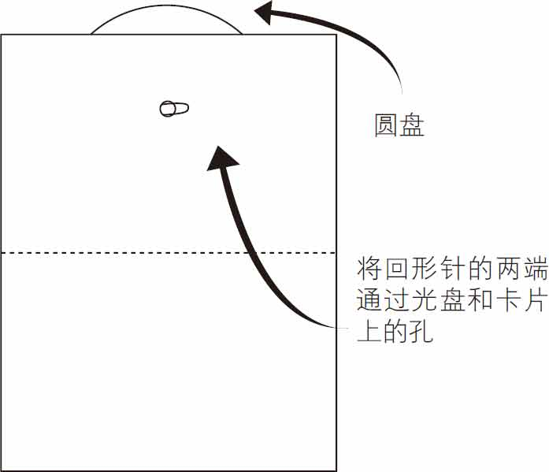
图1-32
用胶带将两端固定到圆盘的背面，如图1-33所示。
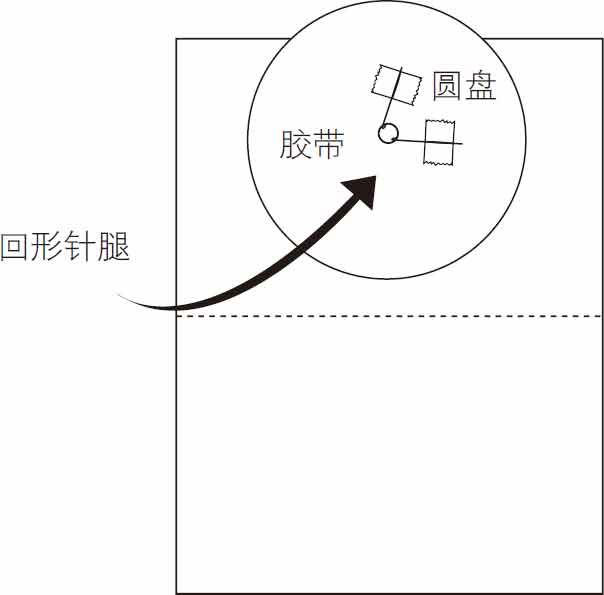
图1-33
现在，你可以自由转动圆盘，见图1-34。
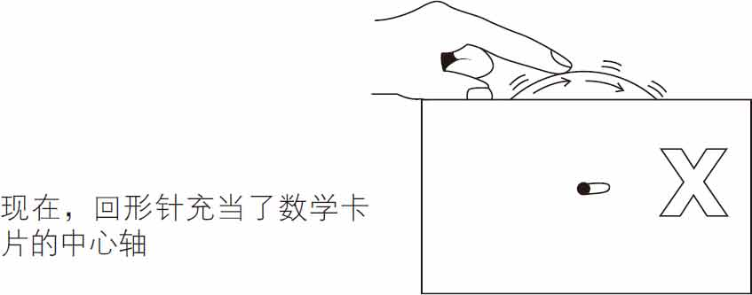
图1-34